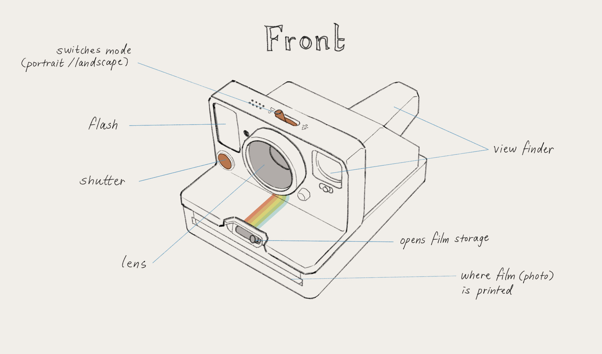
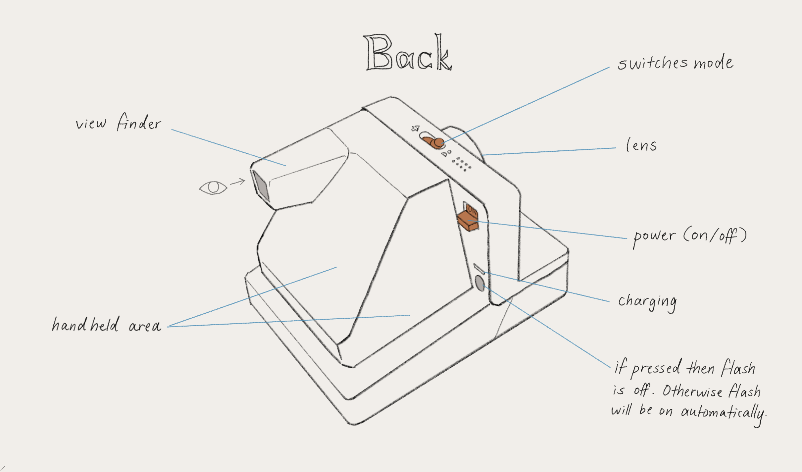
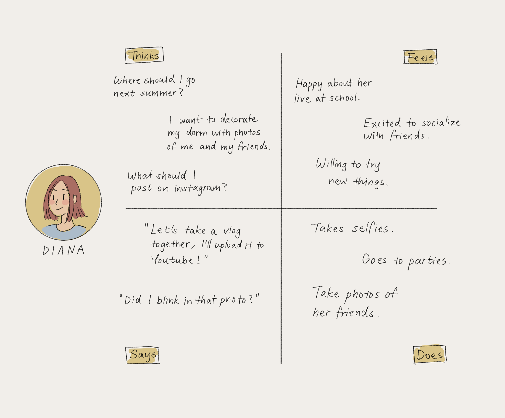
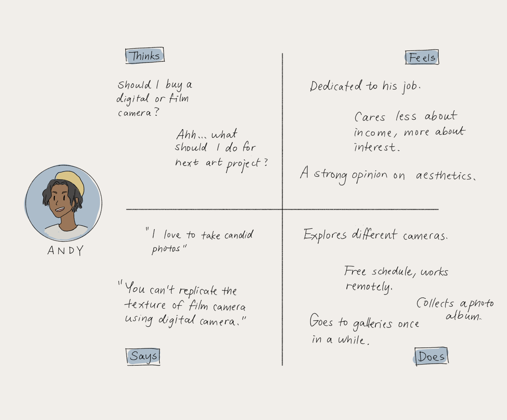
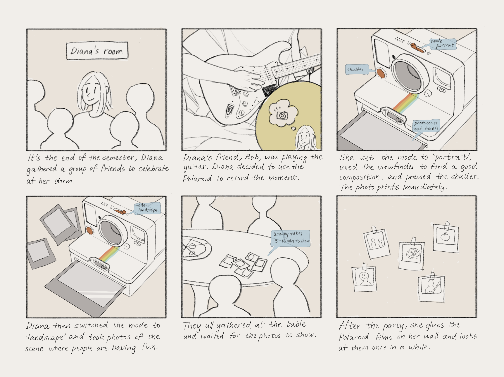

Personas & Storyboarding
CS1300 Assignment 1
Part I - Preparations
This project is designed to observe and interview users of their experience interacting with an interface. I will then design personas and a storyboard once the above information is collected.
Interface: The Polaroid camera


I chose the Polaroid as my interface due to my personal interest in photography. Contrary to digital cameras, Polaroid prints immediately after you press the shutter without any digital records - meaning that there’s only one copy of it, even if you take many photos in the same position the printed film will always be slightly different. I observed and interviewed 3 friends (with prior experience with digital cameras) of the experience using the Polaroid with the instructions to take at least 4 photos within 2 days.
Part II - Recording Observation
I searched up
- Turned the camera around.
- Had difficulties figuring out where the shutter is located.
- Played with different switches and functions.
- 2/3 users did not realize how to turn off the flash.
- 1/3 was confused that the printed photo does not instantly show.
- Waited for the printed film to show, checks once in a few seconds.
- Please briefly describe your experience using the camera. How is it different from taking a picture using a phone or digital camera?
- Do you find anything particularly challenging in your experience? Why?
- How do you like the design of the camera - is it easy to hold and intuitive to use?
- Polaroid only prints 1 photo at a time and there are no digital copies. What do you think of this?
- In what situations would you prefer to use a digital camera over the Polaroid, and in what situations would you use the Polaroid over the others?
- Users with prior experience with photography enjoyed the experience more than users that merely take photos using their phone.
- Users had challenges using the interface mainly because the shutter was located at the front of the camera rather than at the top. (Note: shutter is located at the top in most digital cameras.)
- Most users thought the design of the interface was very aesthetic, except one who thought it’s a little heavy and thus not very convenient.
- Surprisingly, all users I interviewed liked the fact that the Polaroid had no digital copies - saying that it makes the photo ‘unique’ and ‘captures the moment.’
- Users generally prefer to bring the Polaroid when on vacation or at a friend’s party, and would not bring the Polaroid with them on a daily basis.
Part III - Personas


Figure 1: Diana
Diana is a 20 year old college student who loves socializing. She likes to invite friends to her apartment and host activities. Instagram is her favorite social media and she posts once in a while. She also likes to make videos or collages for her friend’s birthday. She decorated her dorm with a wall of photos of her friends.
Figure 2: Andy
Andy is a 28 year old freelance artist and photographer. He accepts commissions of digital art on his personal site and works on them remotely. Sometimes clients would invite him on site to take photos of events or galleries. When he’s not at work, he loves to explore with different art mediums and play with his film camera.
I'm going to explore more on Diana (figure 1) and create a storyboard based on the figure’s qualities and traits.
Part IV - Storyboards
